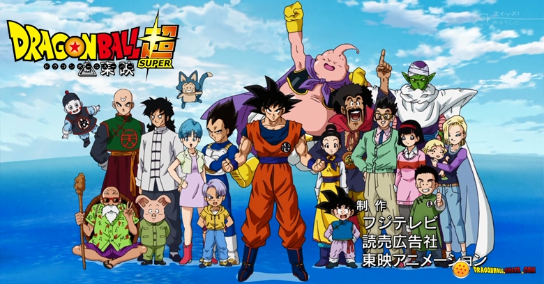

DRAGON BALL SUPER ES LA LUZ
este es el cuerpo de la pagina, aqui pueden ir imagenes,videos,musica,etc...
todo lo que este dentro de body será nuestra página web. LALALALA ñandú jooo
Dragon Ball Super es un anime producido por Toei Animation, que comenzó a transmitirse el 5 de julio de 2015. Es secuela del manga de Dragon Ball y de la primera serie de televisión, que ofrece una nueva historia después de 18 años.
| Boo | Krillin | Nro 18 | Nro 17 | Goku | Vegeta | Gohan | Maestro Roshi | Tenchinhan | Pikoro |
| Rayo Chocolate | Quien san | Quien san | Escudo | Genkidama | Final Flash | Golpes meteoro | Kamehameha | Ki Ko Hu | Masenkosapo |
|  | La serie se desarrollara en la tierra, tiempo después de la lucha terrible contra Majin Buu. Por órdenes de Milk, Goku trabaja fuertemente todos los días en la agricultura. Sin embargo también tiene algunos momentos para entrenar. Por otra parte, Mr Satan, luego de haber salvado al planeta por segunda vez recibe el ¡¿Premio Mundial de la Paz?! |